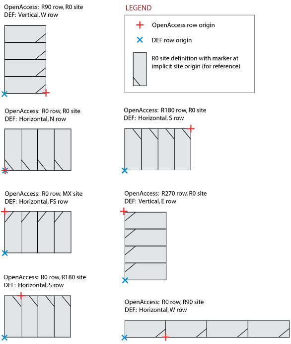

|
 |
 |
 |
|
|
|
|
[ROW rowName siteName origX origY siteOrient
[DO numX BY numY [STEP stepX stepY]]
[+ PROPERTY {propName propVal} ...] ... ;] ...
END ROW]
The DEF ROW maps to OpenAccess using an oaRow object. In OpenAccess, row and site orientations are concatenated (the site orientation is relative to the row), whereas in DEF, the two orientations are absolute. The OpenAccess site orientation is determined by subtracting the OpenAccess row orientation from the DEF site orientation. IN THIS FILE?
For example, if in DEF there is a vertical row with W
orientation, the row orientation created in OpenAccess is R90. Then the OpenAccess site orientation is the DEF W
(R90), minus the OpenAccess orientation of R90, giving R0.
rowName
The rowName corresponds to the name of the row object and is obtained using:
void oaRow::getName(oaString &name) const
siteName
The siteName corresponds to the siteDef name associated with the row. It is obtained using:
void oaRow::getSiteDefName(oaString &name) const
origX, origY
The origX and origY information corresponds to the coordinates of the lower left point of the row bbox. It is obtained using:
oaFig::getBBox(oaBox &bBox) const oaInt4 oaBox::left() const oaInt4 oaBox::bottom() const
siteOrient
The siteOrient information is absolute in DEF, but in OpenAccess, this site orientation is relative to the row. The OpenAccess site orientation is determined by applying the inverse of the OpenAccess row orientation to the DEF site orientation.
For example, assume a vertical row exists in DEF with W orientation. The row orientation in OpenAccess is R90, and the site orientation is then: W (R90) inverted to R270 and concatenated to the row orientation of R90, which yields a site orientation of R0. This can be seen in the first figure in the examples below.
| DEF | OpenAccess | |
|---|---|---|
| Row Type | Row Orientation | Site Orientation |
| Horizontal Rows | ||
| N | R0 | R0 |
| S | R0 | R180 |
| FN | R0 | MY |
| FS | R0 | MX |
| Vertical Rows | ||
| E | R90 | R180 |
| W | R90 | R0 |
| FE | R90 | MY |
| FW | R90 | MX |
The following examples compare the DEF and OpenAccess approaches for row and site orientations.
Image: 
When the row object represents a horizontal row (row orientation R0, R180, MY, or MX), numX corresponds to the number of sites in this row. spaceX corresponds to the width of the associated siteDef. These are obtained using:
oaOrient oaRow::getOrient() const
oaUInt4 oaRow::getNumSites() const
oaRowHeader *oaRow::getHeader()
oaSiteDef *oaRow::getSiteDef() const
When the row object represents a vertical row (row orientation R90, R270, MYR90, or MXR90), numY corresponds to the number of sites in the row. spaceY corresponds to the height of the associated siteDef. These are obtained by using:
oaOrient oaRow::getOrient() const
oaUInt4 oaRow::getNumSites() const
oaRowHeader *oaRow::getHeader()
oaSiteDef *oaRow::getSiteDef() const
See PROPERTIES.

Copyright © 2003-2008 Cadence Design Systems, Inc.
All rights reserved.